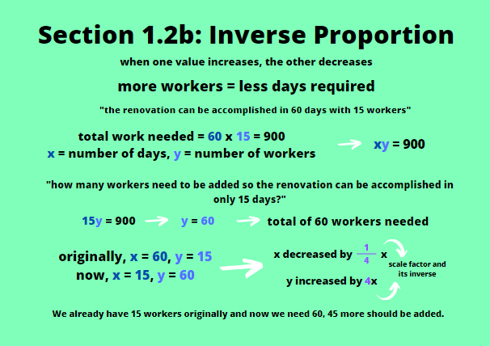
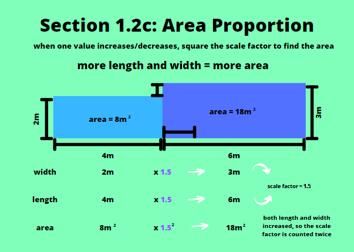

Proportions are comparisons of numbers that can be used to find other values related to it. It's often used to find the correlation between data, such as how adding more sugar into tea makes the concentration of sugar in that cup of tea increase. It could also be used to measure an area of land when its length and width are increased or decreased. There are so many uses of proportions in our daily lives that we often overlook. We are going to discuss the different types in this chapter, and how they can each be applied in a real-world scenario.
a. Direct Proportion
The first type of proportion would be the direct proportion. It's called 'direct' because if one of the quantities increase, the other increases as well. When it decreases, the other decreases. This applies to that sugar and tea example. If you add more sugar, then the tea becomes sweeter (the concentration of sugar in the cup of tea increases), but if you decide to add only a pinch of sugar, then the concentration will not be that high. Let's say every 1 extra teaspoon of sugar added will make the tea twice sweeter. If you add 2 teaspoons, the tea is 4 times sweeter. As the number of teaspoons of sugar increases, the 'sweetness of the tea also increases'. Since each teaspoon makes the cup of tea sweeter by twice, we have a scale factor of 2. The scale factor refers to the number that stays the same throughout calculating the proportions, and the one you multiply when a quantity decreases or increases. If the scale factor is less than 1, the quantity decreases, and if it's more than 1, the quantity increases. The scale factor is 1 if the quantity doesn't change, because multiplying 1 to a quantity doesn't change it. It's quite rare to see 1 as a scale factor.
b. Inverse Proportion
Inverse proportion is involved when one quantity increases and the other decreases. A commonly encountered question is about the number of builders and the number of days. When the number of builders is increased, the work is done faster and the number of days taken to complete the work is decreased. Let's say a house is being renovated. It takes 60 days for 15 workers to accomplish the job. If the house's owner wants the renovation to be completed in 15 days, the number of workers should be added. We can observe that the number of days provided now becomes 4 times smaller than the original (1/4 times). In inverse proportions, one of the quantities decrease by the same factor as much as the other quantity increases, so if the number of days decrease by 4 times, the number of workers should increase by 4. With that in mind, we have 4 x 15 = 60 workers needed in total to accomplish the renovation in 15 days. This can also be obtained by multiplying the number of days with the number of workers. With 60 days and 15 workers originally, we have the total amount of work to be 60 x 15 = 900 'work'. With 15 days and 60 workers, we have 15 x 60 = 900, which is the same amount. If the question asks you how many workers should be added, don't forget to subtract the numbers of workers at the beginning and after the calculation. At first we only had 15 workers, and now we need 60, so we need another 45 workers.
c. Area Proportion
Sometimes, the length and width of an area of an object or land can be changed, and that changes the overall area of that object or land. If we have a 2m x 4m rectangular piece of land, and it's increased into a 3m x 6m piece of land, we can notice that the lengths are increased by a scale factor of 1.5. However, the area of the land is increased by the square of the scale factor. The square of 1.5 is 2.25. Our original piece of land is 2 x 4 = 8m2, and our new area is 3 x 6 = 18m2. We can see that 8m2 x 2.25 = 18m2. To find the increase of an area when the lengths and widths are increased or decreased, the scale factor should be squared, because it applies to two quantities - the length and the width.